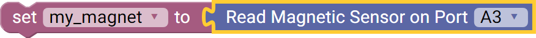

Magnetic Sensor (45-2020)
The Magnetic Sensor detects a magnetic field and returns the strength based on the distance between the sensor element and the magnet. The default returned by the sensor when no magnetic field is present is approximately 340. When the returned value is increasing, the sensor is detecting the "North Pole" of the magnet. If the value returned is decreasing, then the sensor is detecting the "South Pole" of the magnet.
- Connect via analog port A0 - A7.
List of available blocks:

Read
Measures the intensity of a magnetic field.
- The returned reading ranges from 0 - 1023.
Block:
Code Produced:
Setup:
magnetic_A0 = Fusion.analog(f, f.A0)Code:
magnetic_A0.read()Example:

Code:
import Fusion f = Fusion.driver() my_magnet = None magnetic_A3 = Fusion.analog(f, f.A3) my_magnet = magnetic_A3.read()

Questions?
Contact Boxlight Robotics at support@BoxlightRobotics.com with a detailed description of the steps you have taken and observations you have made.
Email Subject: Fusion Blockly Magnetic Sensor